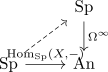

t-structure of spectra and mapping spectrum
Proposition
todo: write modules over a connective ring spectrum Let $X \in \mathrm{Sp}$ be an object TFAE:
- $X$ lies in $\mathrm{Sp}_{\geq n}$
- for all $Y \in \mathrm{Sp}_{\leq n-1}$, the mapping spectrum $\mathrm{map}(X, Y)$ lies in $\mathrm{Sp}_{\leq -1}$
Proof
follows from the commutative diagram

where the functor $\Omega^{\infty}$ detects the higher homotopy groups.